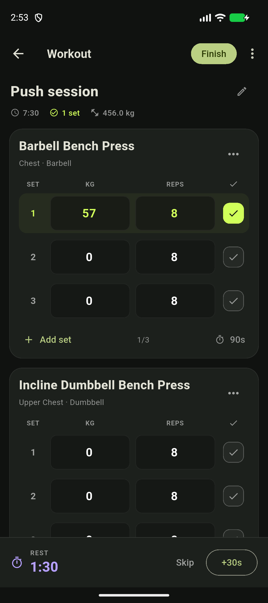

Plan your week
Set training and rest days, start from Push, Pull, Legs, or Full Body presets, and build reusable templates. Copy a routine to another day, reorder exercises, and group supersets.
The training journal for Android
Plan your lifts, track your routes, and see what’s getting stronger. From the first warm-up to the last kilometre, keep it all in MyRoutine.

Inside the app
See your previous set, log weight and reps, and tick off each set. Time planks and holds with the stopwatch, then let the rest timer call you back.
Record runs, walks, rides, and hikes. Get distance, pace, splits, and a saved route. See active metrics and session controls in Android notifications.
Check your weekly goal, volume, sets, and level from Home. Start a freestyle workout or open a saved routine.
Features
Set training and rest days, start from Push, Pull, Legs, or Full Body presets, and build reusable templates. Copy a routine to another day, reorder exercises, and group supersets.
Choose strength, bodyweight, assisted, timed, or cardio entry. Record warm-ups, working sets, drop sets, failure, RPE, and notes. Use kg or lb and calculate plates for your bar.
Pick per-exercise rest intervals, adjust the timer with Skip or +30 seconds, and see Android rest alerts. Recover a draft after closing the app. Set weekly training reminders.
Track GPS distance, pace or speed, and kilometre splits. Set time or distance goals, turn on audio cues and auto-pause, and view either a street map or the offline route trace.
Explore charts for strength, volume, consistency, and bodyweight. Track rep records, your longest plank or ride, and your fastest 5 km. Review suggested next-session targets before applying them.
Ask workout-history questions, generate a weekly review or cardio recap, and get routine ideas and set previews. These tools run on your device.
Earn achievements and XP, complete weekly quests, and climb named ranks. Track water and bodyweight, find exercises or add your own, and choose Light, Dark, or System appearance.
Search by routine, exercise, date, or notes. Edit previous sessions and undo deletion. Export CSV, save or restore a JSON backup, or enable cloud sync with your verified email or Google account.
New in 2.9.1
Ask questions in your own words, from “What does RPE mean?” to “How much lifting volume did I log this week?”
To enable the Qwen model, open Workout assistant → Download offline model in the app. After a separate, one-time 1.12 GB download, it runs on your Android phone without a paid API.
Qwen model detailsCompares training and 5 km pace, flags missed routines, and asks before moving them.
Adapts today’s plan to your time and equipment, explains substitutions, and asks before starting.
Shows where pace changed, compares similar sessions, and separates moving and auto-paused time when recorded.
Android downloads
Both signed APKs include offline workout logging, GPS cardio, and optional cloud sync. Choose 2.9.1 to try the new coaching tools and downloadable workout model.
Previous version · 59.6 MiB
Download 2.9.1New features · 152.7 MiB APK · Optional model downloaded in the app
Both builds require Android 7.0 or later. Open the APK on your phone and allow installs from your browser or file manager if prompted. To keep your saved sessions, install a newer version over your existing MyRoutine app.
Android may block going back to an older version. Back up your workouts before uninstalling either version.